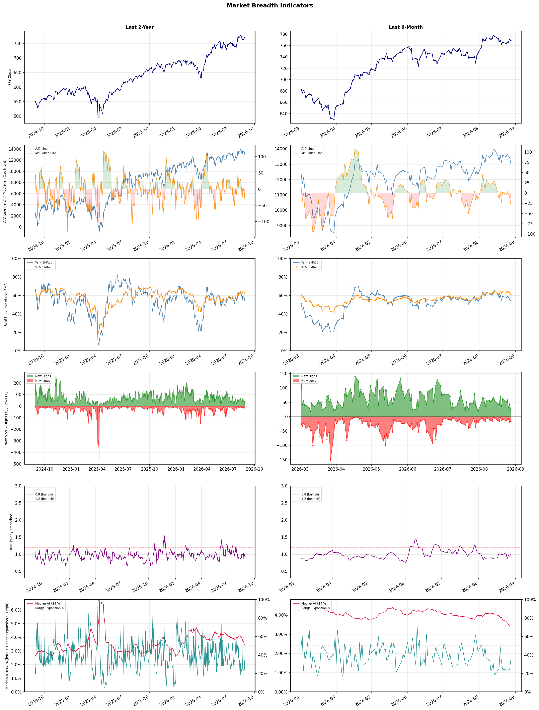

A daily market breadth and sector rotation report for active investors
| Item | Read |
|---|---|
| Regime | Selective Risk-On |
| Risk posture | Selective |
| Universe | 1,331 stocks tracked · 20 new 52-week highs · 30 active swing setups |
| Breadth | 54.2% of tracked stocks are above SMA50 — neutral range, new highs exceed new lows (20 vs 17), McClellan oscillator (breadth momentum) is negative at -29.1 |
| Leadership | Diagnostics & Research, Health Information Services, and Insurance Brokers |
| Weakest groups | Solar, Footwear & Accessories, and Chemicals |
Use this report to prioritize research and chart review; validate entries, stops, liquidity, earnings, and risk before acting.
| Item | Read |
|---|---|
| Primary read | Selective Risk-On regime with Selective risk posture. |
| Research queue | TWST, NEO, WGS, PSNL, NTRA |
| Leadership focus | Diagnostics & Research, Health Information Services, and Insurance Brokers |
| Caution list | Solar, Footwear & Accessories, and Chemicals |
| Review prompt | Check extension risk, chart location, fundamentals, valuation, and earnings before using any research row. |
| Item | Read |
|---|---|
| Primary read | 2 active risk warnings; use screen output as watchlist input only. |
| Bullish screens | AMPL, DT, ESTC, DINO, MPC |
| Bearish screens | WVE, OPEN, QFIN, EVGO, ESRT |
| Alerts / levels | Automated trigger, stop, ATR, liquidity, reward/risk, and event-risk levels are pending future enrichment. |
| Review prompt | Open the linked chart, define trigger and invalidation, then check liquidity and event risk independently. |
Risk Posture: Selective — screen backdrop supports selective research in leading industries
Metric context: McClellan below -50 = elevated selling pressure; below -100 = washout territory. Range Expansion = share of stocks with daily range above their 20-day average. Signal Density = share of tracked names appearing in signal screens.
| Breadth Date | % > SMA50 | % > SMA200 | New Highs | New Lows | McClellan | Median Range | Avg Range | Median ATR14 | Range Expansion | Signal Density |
|---|---|---|---|---|---|---|---|---|---|---|
| 2026-08-28 | 54.2% | 61.3% | 20 | 17 | -29.1 | 2.9% | 3.6% | 3.4% | 34.4% | 8.2% |

Prior comparison date: August 27, 2026
| Metric | Prior | Current | Change |
|---|---|---|---|
| Regime | Selective Risk-On | Selective Risk-On | unchanged |
| Risk Posture | Selective | Selective | unchanged |
| % > SMA50 | 55.7% | 54.2% | -1.5 pts |
| % > SMA200 | 62.9% | 61.3% | -1.6 pts |
| New Highs | 44 | 20 | -24 |
| New Lows | 20 | 17 | +3 |
Top-10 industries entering: Financial Data & Stock Exchanges. Top-10 industries leaving: Medical Care Facilities. New multi-signal long setups: AMPL, BOX, CMBT, DINO, DT, ESTC, MPC. New multi-signal short setups: ESRT, EVGO, NRG.
| Status | Tickers | Read |
|---|---|---|
| Added | AMPL, ARX, BOX, CMBT, CRSR, DINO, DOCS, DT | New technical screen matches vs prior report. |
| Removed | ABSI, APPS, APTV, AVAH, FSLY, HDB, HNGE, IQ | No longer present in today's technical screen matches. |
| Still Active | AVTX, GEN, NMR, NVCR, QFIN, SPGI, WTI | Appeared in both current and prior reports. |
| Promoted | none | Model Screen Score improved by at least 15 points. |
| Downgraded | NVCR | Model Screen Score declined by at least 15 points. |
| Direction | Industry | ETF | Prior Rank | Current Rank | Days | Rank Change |
|---|---|---|---|---|---|---|
| Rose | Gold | GDX | 86 | 5 | 42 | +81 |
| Rose | Copper | COPX | 84 | 7 | 42 | +77 |
| Rose | Agricultural Inputs | N/A | 84 | 23 | 14 | +61 |
| Rose | Uranium | URA | 88 | 32 | 42 | +56 |
| Rose | Grocery Stores | N/A | 83 | 28 | 35 | +55 |
Bull: Gold is experiencing a rise in relative strength primarily due to increasing investor interest in safe-haven assets amid economic uncertainties and inflationary pressures, as highlighted by headlines discussing the "debasement trade" and the need for gold ownership in retirement accounts. Additionally, with gold prices near $4,270 and gold mining ETFs like GDX still 22% below their peak, there is a compelling catch-up trade opportunity that is attracting attention, particularly as analysts spotlight gold mining stocks amidst ongoing industry pressures. This combination of macroeconomic factors and favorable valuation dynamics positions gold and its related equities for significant upside potential.
Bear: While the rising relative strength of gold may attract investor interest, it is crucial to consider the underlying economic factors that could undermine this momentum. The recent headlines suggest a heightened focus on gold due to inflation and economic uncertainties, yet this can also lead to a crowded trade where overvaluation becomes a risk, especially as gold prices are already historically high. Additionally, the 22% gap between GDX and its peak may not necessarily indicate a catch-up opportunity; rather, it could reflect fundamental weaknesses in the gold mining sector, including rising operational costs, potential regulatory challenges, and geopolitical risks that could pressure margins and profitability.
Verdict: The gold industry's recent rise is fundamentally driven by increasing investor demand for safe-haven assets amid persistent economic uncertainties and inflation, positioning gold as a hedge against potential currency debasement. However, investors should remain cautious of the risk of overvaluation, as high gold prices could lead to a crowded trade, and underlying challenges in the gold mining sector—such as rising operational costs and geopolitical risks—may pressure profitability and undermine momentum.
Sources: Yahoo Finance, Google News
Bull: Copper is experiencing a rise in relative strength largely due to its critical role in the electrification and AI boom, as highlighted in recent headlines discussing COPX as a key investment in the "electrification squeeze" and its positioning as a "pick-and-shovel" play for AI. Additionally, the narrative that "copper is the new crude" underscores its increasing demand as economies transition towards renewable energy and electric vehicles, further bolstered by the significant price appreciation of copper miners, which have outperformed other sectors. This combination of robust demand drivers and a favorable investment sentiment positions copper favorably in the current market landscape.
Bear: While the narrative around copper's role in electrification and AI is compelling, it overlooks several critical headwinds that could dampen demand and pricing. First, the current bullish sentiment may be overextended, as global economic uncertainties, including potential recessions and tightening monetary policies, could lead to reduced industrial activity and lower copper consumption. Additionally, the mining sector faces significant challenges such as rising operational costs, regulatory hurdles, and environmental concerns, which could limit supply and exacerbate volatility, undermining the long-term investment thesis for COPX.
Verdict: Copper's rising trend is fundamentally driven by its essential role in the electrification of economies and the AI boom, leading to increased demand for electric vehicles and renewable energy technologies. However, investors should remain cautious of potential headwinds, including global economic uncertainties and rising operational costs in the mining sector, which could dampen demand and create volatility in copper prices. To navigate this landscape, investors should consider a diversified approach, balancing exposure to copper with awareness of macroeconomic indicators and mining sector challenges.
Sources: Yahoo Finance, Google News
Bull: The Agricultural Inputs sector is experiencing a bullish trend due to a combination of rising commodity prices and increased demand for fertilizers, as highlighted by recent headlines indicating a sector-wide rally. The breakout in the economically sensitive materials sector, coupled with positive stock movements like CF Industries Holdings' 5.5% jump, suggests a robust recovery in agricultural investments, driven by anticipated growth in crop yields and food production. Furthermore, analysts are optimistic about the sector's prospects through 2026, reinforcing the belief that agricultural inputs will play a critical role in meeting global food demand amid changing economic conditions.
Bear: While the recent headlines suggest a bullish trend in the Agricultural Inputs sector, it is crucial to consider the potential headwinds that could undermine this optimism. Rising input costs, particularly energy prices and supply chain disruptions, may erode margins for agricultural producers, leading to reduced demand for fertilizers. Additionally, the long-term sustainability of agricultural practices is being questioned, with increasing regulatory pressures and a shift towards organic farming, which could limit the growth potential for traditional agricultural inputs.
Verdict: The Agricultural Inputs sector is likely moving upward due to rising commodity prices and increased demand for fertilizers, driven by expectations of higher crop yields and food production. However, the key risk lies in rising input costs and supply chain disruptions, which could pressure margins for agricultural producers and dampen demand for traditional fertilizers. Investors should monitor energy prices and regulatory developments closely to assess the sustainability of this bullish trend.
Sources: Google News
Bull: The rising relative strength of uranium stocks, as indicated by the recent headlines, can be attributed to a renewed risk appetite among investors, particularly as nuclear energy gains traction amid increasing global energy demands. The significant rally of uranium stocks, including a 57% increase over the past year, reflects a growing recognition of nuclear power's role in meeting energy needs, especially as AI-driven efficiencies in energy production continue to rise. Additionally, the recent oversold bounce in nuclear stocks suggests that market participants are reassessing valuations and recognizing the long-term potential of uranium investments despite recent volatility.
Bear: While the recent rally in uranium stocks may seem promising, it is crucial to recognize that the 57% increase over the past year has been followed by a significant 17% correction, indicating underlying volatility and potential overvaluation. Moreover, the broader market's renewed risk appetite could be fleeting, especially as the recent headlines highlight the lack of sustained momentum for key players like NuScale Power and Oklo, which have experienced sharp declines despite initial enthusiasm. Additionally, the 30% crash in uranium ETFs suggests that investor sentiment may be shifting, raising concerns about the long-term viability of uranium investments amid increasing competition from alternative energy sources and the uncertain regulatory landscape surrounding nuclear power.
Verdict: The recent rise in uranium stocks is primarily driven by a renewed investor appetite for nuclear energy as a viable solution to meet escalating global energy demands, coupled with increasing efficiencies in energy production. However, the key risk lies in the potential for volatility and overvaluation, as evidenced by the recent 17% correction and the significant declines of key players, which could undermine long-term confidence in uranium investments amid competition from alternative energy sources and regulatory uncertainties. Investors should closely monitor these dynamics and consider a cautious approach, balancing potential gains with the inherent risks.
Sources: Yahoo Finance, Google News
Bull: The rising relative strength of the Grocery Stores sector can be attributed to its resilience amid broader economic challenges, as highlighted by recent headlines discussing supermarket stocks like Albertsons and Natural Grocers. The consistent demand for essential goods, coupled with the sector's ability to adapt and thrive despite industry headwinds, suggests that grocery retailers are positioned well for growth, particularly as consumers increasingly prioritize value and quality in their food purchases. Additionally, the focus on organic products and natural food retailers, as seen in the discussion of NGVC, indicates a shift towards healthier options that may drive further sales and profitability in the sector.
Bear: While the grocery sector may currently exhibit rising relative strength, this trend could be misleading as it often reflects short-term consumer behavior rather than sustainable growth. Economic pressures, such as inflation and rising costs, could erode profit margins for grocery retailers, particularly as consumers may shift back to discount retailers or lower-quality options when faced with tighter budgets. Additionally, the focus on organic and natural products, while appealing, may not be enough to offset the potential decline in sales volume as consumers prioritize affordability over quality in a challenging economic environment.
Verdict: The grocery store industry's rising relative strength is fundamentally driven by consistent demand for essential goods and a consumer shift towards value and quality, particularly in organic and natural products. However, a key risk lies in the potential impact of inflation and economic pressures, which could lead consumers to prioritize affordability over premium options, ultimately threatening profit margins and sales volume for retailers. To navigate this landscape, grocery stores should focus on enhancing value propositions while maintaining competitive pricing strategies.
Sources: Google News
| Direction | Industry | ETF | Prior Rank | Current Rank | Days | Rank Change |
|---|---|---|---|---|---|---|
| Fell | REIT - Retail | N/A | 9 | 77 | 42 | -68 |
| Fell | REIT - Healthcare Facilities | XLRE | 3 | 67 | 35 | -64 |
| Fell | Leisure | N/A | 9 | 70 | 28 | -61 |
| Fell | REIT - Office | XLRE | 2 | 59 | 35 | -57 |
| Fell | Semiconductor Equipment & Materials | SOXX | 20 | 75 | 14 | -55 |
Bear: While the headlines may suggest optimism about the retail REIT sector, they overlook critical headwinds that could undermine this supposed recovery. Consumer spending remains volatile amid rising inflation and interest rates, which could lead to decreased foot traffic and lower retail sales, ultimately impacting rental income for REITs. Furthermore, the expansion of companies like FrontView REIT may not be a reliable indicator of overall sector health, as it could simply reflect a strategy to capture market share in a declining environment rather than genuine growth in retail demand.
Bull: The relative weakness of the REIT - Retail sector can largely be attributed to broader market concerns about consumer spending and economic uncertainty, as indicated by the focus on growth and investment strategies in recent headlines. Reports highlighting the best REITs to buy and the potential for retail real estate to outperform suggest that while the sector is currently under pressure, there is optimism about recovery and growth, particularly as companies like FrontView REIT are expanding their footprint across America, which could signal a rebound in retail demand.
Verdict: The retail REIT sector is experiencing a downturn primarily due to broader economic concerns, including volatile consumer spending driven by rising inflation and interest rates, which threaten rental income and foot traffic. While there are signs of potential recovery, such as expansions by companies like FrontView REIT, the key risk lies in the possibility that these expansions may not translate into genuine demand growth but rather reflect a strategy to capture market share in a challenging environment. Investors should closely monitor consumer spending trends and macroeconomic indicators before making investment decisions in this sector.
Sources: Google News
Bear: While the bull analyst attributes the relative weakness of Healthcare Facilities REITs to a shift in investor focus towards financials and rising interest rates, it is essential to consider the inherent vulnerabilities of the healthcare sector, including increasing operational costs, regulatory pressures, and demographic shifts that may not favor traditional healthcare facilities. Additionally, with the potential for a recession looming, healthcare REITs may face heightened risks related to tenant defaults and reduced demand for services, further exacerbating their performance challenges compared to other sectors that may be more resilient in an economic downturn.
Bull: The relative weakness of the Healthcare Facilities REIT sector can be attributed to the recent strength in financial stocks, as highlighted by multiple sector updates indicating advances in that area. This shift in investor focus towards financials, coupled with a broader trend of rising interest rates, may be diverting capital away from healthcare REITs, which typically face higher borrowing costs and increased competition for investment. Additionally, the positive sentiment surrounding other sectors, as noted in the headlines, suggests that investors might be prioritizing sectors with more immediate growth potential over the traditionally stable but slower-growing healthcare REITs.
Verdict: The recent decline in Healthcare Facilities REITs can be primarily attributed to a shift in investor sentiment towards more growth-oriented sectors, such as financials, alongside the impact of rising interest rates that increase borrowing costs for these REITs. Key risks highlighted in the bear thesis include rising operational costs, regulatory pressures, and potential tenant defaults amid looming recession fears, which could further weaken demand for healthcare services and exacerbate performance challenges in this sector. Investors should closely monitor these factors and consider reallocating capital to sectors with more immediate growth potential while remaining cautious about the inherent vulnerabilities in healthcare REITs.
Sources: Yahoo Finance, Google News
Bear: While the bull analyst acknowledges the broader economic challenges and mixed results in the consumer discretionary sector, it is crucial to emphasize that the leisure industry is not just navigating headwinds but is facing significant structural issues that could hinder long-term recovery. The ongoing inflationary pressures, rising interest rates, and potential recession fears are likely to dampen consumer spending further, particularly in discretionary areas like travel and leisure. Additionally, the reliance on short-term bullish sentiment from analysts may overlook the fundamental vulnerabilities within the sector, such as changing consumer preferences and increased competition, which could lead to a more prolonged downturn than currently anticipated.
Bull: The Leisure industry is experiencing falling relative strength primarily due to broader economic challenges impacting consumer discretionary spending, as highlighted in the recent earnings roundup indicating mixed results in the consumer discretionary sector. Additionally, the ongoing recovery from the pandemic has led to fluctuating travel demand, which is evident in the mixed sentiment around travel and tourism stocks, despite bullish recommendations from analysts like Susquehanna, suggesting that while there are opportunities, the overall sector is still navigating headwinds.
Verdict: The leisure industry's decline is primarily driven by broader economic challenges, including inflationary pressures and rising interest rates, which are reducing consumer discretionary spending. The key risk highlighted by the bear case is that these structural issues, combined with changing consumer preferences and increased competition, could lead to a prolonged downturn, suggesting investors should approach leisure stocks with caution and consider reallocating to more resilient sectors.
Sources: Google News
Bear: While the bull analyst attributes the relative weakness in the Office REIT sector to the performance of financial stocks and a broader real estate market recovery, the persistent trend of remote work and corporate downsizing continues to undermine demand for office space. Furthermore, the headlines highlighting "best office REITs for 2026" suggest a long-term optimism that may overlook the immediate challenges, such as rising interest rates and potential economic downturns, which could further exacerbate vacancy rates and pressure rental income in the office sector. This environment raises significant concerns about the sustainability of any recovery in Office REITs, making them a risky investment in the near term.
Bull: The relative weakness in the Office REIT sector can largely be attributed to the recent performance of financial stocks, which have been advancing, suggesting a shift in investor focus towards sectors perceived as more resilient amid economic uncertainty. Additionally, the emphasis in recent headlines on the broader real estate market outperforming, along with discussions about the best office REITs for the future, indicates a cautious sentiment towards current office space demand, likely influenced by the ongoing trends of remote work and changing corporate real estate strategies. This environment may lead investors to favor other REIT sectors that promise stronger growth potential in the near term.
Verdict: The Office REIT sector is experiencing a decline primarily due to persistent remote work trends and corporate downsizing, which continue to weaken demand for office space. While some investors may be drawn to the broader real estate recovery and the potential for future growth in select office REITs, the key risk lies in rising interest rates and economic uncertainties that could exacerbate vacancy rates and pressure rental income. Investors should approach Office REITs with caution, considering reallocating to sectors with more immediate growth potential.
Sources: Yahoo Finance, Google News
Bear: While the bull analyst attributes the sector's decline to cooling demand for AI hardware, it's crucial to recognize that this trend may reflect a broader market correction rather than a fundamental weakening in the semiconductor industry. The significant drops in optics stocks and other semiconductor companies suggest that investor sentiment is reacting to heightened volatility and uncertainty, particularly as companies like Marvell and Intel face longer timelines for AI-related returns. Additionally, the mixed performance of ETFs and futures indicates that the market is grappling with macroeconomic factors, such as interest rate concerns and geopolitical tensions, which could further exacerbate the bearish sentiment in the semiconductor sector.
Bull: The Semiconductor Equipment & Materials sector is experiencing a decline in relative strength primarily due to cooling demand for AI hardware, as evidenced by the significant drops in stocks like Applied Optoelectronics and Lumentum. This trend is compounded by broader sector-wide selling, with companies like Amkor Technology and FormFactor also suffering losses, indicating investor concern over short-term performance and profitability amidst a backdrop of mixed market sentiment, as highlighted by the mixed equity futures and the cautious tone surrounding upcoming economic commentary from figures like Warsh.
Verdict: The semiconductor equipment and materials sector is experiencing a decline primarily due to cooling demand for AI hardware, which has led to significant stock drops across the industry, reflecting investor concerns about short-term performance. However, the key risk from the bear case is that this downturn may be exacerbated by broader macroeconomic factors, including interest rate volatility and geopolitical tensions, which could prolong the sector's recovery and impact investor sentiment. Investors should closely monitor these external factors while assessing potential entry points in fundamentally strong companies within the sector.
Sources: Yahoo Finance, Google News
| Industry | Rank | ETF | 7d | 14d | 28d | 42d | Chg 42d | Size | 20D | 60D | Composite | Active Setups |
|---|---|---|---|---|---|---|---|---|---|---|---|---|
| Diagnostics & Research | 1 | N/A | 1 | 2 | 6 | 2 | +1 | 16 | 16.2% | 40.2% | 0.954 | 0 |
| Health Information Services | 2 | N/A | 2 | 3 | 34 | 5 | +3 | 12 | 26.2% | 37.7% | 0.919 | 0 |
| Insurance Brokers | 3 | N/A | 7 | 6 | 20 | 13 | +10 | 6 | 14.8% | 33.4% | 0.877 | 0 |
| Asset Management | 4 | N/A | 12 | 11 | 40 | 55 | +51 | 29 | 13.3% | 16.2% | 0.874 | 1 |
| Gold | 5 | GDX | 6 | 19 | 84 | 86 | +81 | 25 | 39.1% | 16.4% | 0.872 | 0 |
| Software - Application | 6 | IGV | 5 | 4 | 14 | 25 | +19 | 74 | 16.2% | 22.6% | 0.870 | 1 |
| Copper | 7 | COPX | 4 | 15 | 46 | 84 | +77 | 6 | 27.7% | 6.1% | 0.865 | 0 |
| Oil & Gas Refining & Marketing | 8 | CRAK | 3 | 5 | 1 | 1 | -7 | 7 | 6.3% | 35.1% | 0.861 | 0 |
| Biotechnology | 9 | XBI | 8 | 14 | 41 | 8 | -1 | 91 | 14.2% | 27.6% | 0.826 | 1 |
| Financial Data & Stock Exchanges | 10 | N/A | 18 | 50 | 27 | 50 | +40 | 7 | 8.2% | 14.6% | 0.816 | 1 |
Rank columns (7d–42d) show the industry's rank that many trading days ago — lower is stronger. Chg 42d = rank change vs 42 trading days ago — positive means the industry moved up. 20D and 60D are the mean stock return within the industry over that period. Active Setups: count of today's swing-trade candidates from this industry appearing across all signal screens.
| Industry | Rank | ETF | 7d | 14d | 28d | 42d | Chg 42d | Size | 20D | 60D | Composite | Active Setups |
|---|---|---|---|---|---|---|---|---|---|---|---|---|
| Solar | 88 | TAN | 86 | 88 | 85 | 66 | -22 | 8 | -10.8% | -43.1% | 0.031 | 0 |
| Footwear & Accessories | 87 | N/A | 87 | 85 | 63 | 42 | -45 | 5 | -9.5% | -12.7% | 0.088 | 0 |
| Chemicals | 86 | N/A | 85 | 87 | 83 | 83 | -3 | 8 | -7.3% | -30.7% | 0.093 | 0 |
| Utilities - Renewable | 85 | N/A | 81 | 80 | 81 | 82 | -3 | 6 | -5.5% | -31.8% | 0.139 | 0 |
| Resorts & Casinos | 84 | N/A | 68 | 64 | 35 | 51 | -33 | 6 | -6.5% | -8.3% | 0.146 | 0 |
| Utilities - Independent Power Producers | 83 | XLU | 88 | 78 | 80 | 81 | -2 | 5 | -3.6% | -15.6% | 0.189 | 0 |
| Auto Manufacturers | 82 | N/A | 53 | 83 | 47 | 63 | -19 | 10 | -5.4% | -13.5% | 0.202 | 0 |
| Utilities - Regulated Electric | 81 | XLU | 84 | 81 | 65 | 40 | -41 | 29 | -3.6% | -1.8% | 0.208 | 0 |
| REIT - Specialty | 80 | XLRE | 78 | 75 | 53 | 71 | -9 | 11 | -3.8% | -6.6% | 0.209 | 1 |
| Electrical Equipment & Parts | 79 | XLI | 75 | 70 | 82 | 79 | 0 | 12 | -3.4% | -38.9% | 0.209 | 0 |
Rank columns (7d–42d) show the industry's rank that many trading days ago — lower is stronger. Chg 42d = rank change vs 42 trading days ago — positive means the industry moved up. 20D and 60D are the mean stock return within the industry over that period. Active Setups: count of today's swing-trade candidates from this industry appearing across all signal screens.
These are research candidates from top-ranked stocks, capped at five names per industry to avoid over-concentration. Returns shown (60D, 120D, 250D) are historical — they reflect where prices have already moved, not forward expectations. Extension Risk flags names that may require extra patience or a better entry point. They are not buy signals.
Chart: TV = TradingView chart (opens in browser); PDF = local chart file (if downloaded).
| Ticker | Name | Industry | Industry Rank | Market Cap | 60D Hist | 120D Hist | 250D Hist | Extension Risk | Research Reason | Chart |
|---|---|---|---|---|---|---|---|---|---|---|
| TWST | Twist Bioscience | Diagnostics & Research | 1 | N/A | 95.5% | 192.5% | 424.2% | Extended | Top-ranked in industry; extended | TV |
| NEO | NeoGenomics | Diagnostics & Research | 1 | N/A | 78.0% | 102.4% | 105.6% | Extended | Top-ranked in industry; extended | TV |
| WGS | GeneDx Holdings | Diagnostics & Research | 1 | N/A | 62.8% | -8.6% | -33.3% | Extended | Top-ranked in industry; extended | TV |
| PSNL | Personalis | Diagnostics & Research | 1 | N/A | 58.3% | 109.2% | 249.1% | Extended | Top-ranked in industry; extended | TV |
| NTRA | Natera | Diagnostics & Research | 1 | N/A | 54.0% | 59.0% | 93.9% | Extended | Top-ranked in industry; extended | TV |
| TXG | 10x Genomics | Health Information Services | 2 | N/A | 91.4% | 194.3% | 339.3% | Extended | Top-ranked in industry; extended | TV |
| HTFL | Heartflow | Health Information Services | 2 | N/A | 65.6% | 106.1% | 51.7% | Extended | Top-ranked in industry; extended | TV |
| VEEV | Veeva Systems | Health Information Services | 2 | N/A | 54.8% | 41.5% | 2.8% | Extended | Top-ranked in industry; extended | TV |
| TEM | Tempus AI | Health Information Services | 2 | N/A | 34.8% | 22.4% | -15.6% | Constructive | Top-ranked in industry | TV |
| SDGR | Schrodinger | Health Information Services | 2 | N/A | 31.9% | 52.1% | 1.0% | Constructive | Top-ranked in industry | TV |
| BWIN | Baldwin Insurance Group | Insurance Brokers | 3 | N/A | 63.5% | 53.3% | -3.1% | Extended | Top-ranked in industry; extended | TV |
| ARX | Accelerant Holdings | Insurance Brokers | 3 | N/A | 35.0% | 80.3% | -1.6% | Constructive | Top-ranked in industry | TV |
| BRO | Brown & Brown | Insurance Brokers | 3 | N/A | 33.3% | 3.7% | -23.7% | Constructive | Top-ranked in industry | TV |
| AJG | Arthur J. Gallagher | Insurance Brokers | 3 | N/A | 32.6% | 23.3% | -10.6% | Constructive | Top-ranked in industry | TV |
| MRSH | Marsh | Insurance Brokers | 3 | N/A | 23.1% | 8.2% | -4.5% | Constructive | Top-ranked in industry | TV |
| ASST | Strive | Asset Management | 4 | N/A | 47.5% | 155.5% | -82.3% | Extended | Top-ranked in industry; extended | TV |
| TPG | TPG Inc | Asset Management | 4 | N/A | 34.3% | 29.5% | -6.5% | Constructive | Top-ranked in industry | TV |
| WT | WisdomTree | Asset Management | 4 | N/A | 31.4% | 47.7% | 80.8% | Constructive | Top-ranked in industry | TV |
| OWL | Blue Owl Capital | Asset Management | 4 | N/A | 26.4% | 27.8% | -29.9% | Constructive | Top-ranked in industry | TV |
| DXYZ | Destiny Tech100 | Asset Management | 4 | N/A | -14.1% | 34.4% | 27.0% | Lagging | Top-ranked in industry; lagging | TV |
These are technical screen matches from existing signal files. They are not trade recommendations. Trigger, stop, ATR, liquidity, reward/risk, and event risk still require separate validation until those inputs are available.
Model Screen Score is weighted by signal count, industry rank, freshness, and setup type. It is not a probability of profit, expected return, or suitability rating. Industry cap: max 3 candidates per industry.
Signal glossary: Momentum Pullback = stock in an uptrend that has pulled back 10–30% and shows re-entry conditions. MA Compression = short- and long-term moving averages converging, often preceding a directional move. Three-Day Up/Down = three consecutive closes in the same direction. New 52Wk High/Low = price reached a new annual extreme.
Chart: TV = TradingView chart (opens in browser); PDF = local chart file (if downloaded).
| Ticker | Industry | Setups | Close | Industry Rank | Signal Count | Model Screen Score | Reason | Chart |
|---|---|---|---|---|---|---|---|---|
| AMPL | Software - Application | New 52Wk High; Three-Day Up | 14.30 | 6 | 2 | 93 | Multi-signal; top industry breakout | TV |
| DT | Software - Application | New 52Wk High; Three-Day Up | 53.67 | 6 | 2 | 93 | Multi-signal; top industry breakout | TV |
| ESTC | Software - Application | New 52Wk High; Three-Day Up | 99.91 | 6 | 2 | 93 | Multi-signal; top industry breakout | TV |
| DINO | Oil & Gas Refining & Marketing | New 52Wk High; Three-Day Up | 99.71 | 8 | 2 | 85 | Multi-signal; top industry breakout | TV |
| MPC | Oil & Gas Refining & Marketing | New 52Wk High; Three-Day Up | 368.83 | 8 | 2 | 85 | Multi-signal; top industry breakout | TV |
| BOX | Software - Infrastructure | New 52Wk High; Three-Day Up | 34.98 | 11 | 2 | 85 | Multi-signal; new-high strength | TV |
| GEN | Software - Infrastructure | New 52Wk High; Three-Day Up | 31.02 | 11 | 2 | 85 | Multi-signal; new-high strength | TV |
| CMBT | Oil & Gas Midstream | New 52Wk High; Three-Day Up | 18.35 | 19 | 2 | 77 | Multi-signal; new-high strength | TV |
| NMR | Capital Markets | New 52Wk High; Three-Day Up | 10.30 | 24 | 2 | 77 | Multi-signal; new-high strength | TV |
| DXYZ | Asset Management | Momentum Pullback | 34.74 | 4 | 1 | 58 | Single-signal; top industry pullback | TV |
| DOCS | Health Information Services | Three-Day Up | 26.73 | 2 | 1 | 55 | Single-signal; top industry setup | TV |
| WAY | Health Information Services | Three-Day Up | 26.24 | 2 | 1 | 55 | Single-signal; top industry setup | TV |
| ARX | Insurance Brokers | Three-Day Up | 19.73 | 3 | 1 | 55 | Single-signal; top industry setup | TV |
| AVTX | Biotechnology | Momentum Pullback | 19.59 | 9 | 1 | 50 | Single-signal; top industry pullback | TV |
| EWTX | Biotechnology | Momentum Pullback | 42.76 | 9 | 1 | 50 | Single-signal; top industry pullback | TV |
| OTF | Asset Management | Three-Day Up | 11.38 | 4 | 1 | 48 | Single-signal; top industry setup | TV |
| TPG | Asset Management | Three-Day Up | 53.97 | 4 | 1 | 48 | Single-signal; top industry setup | TV |
| SPGI | Financial Data & Stock Exchanges | MA Compression | 442.89 | 10 | 1 | 45 | Single-signal; top industry setup | TV |
| NVCR | Medical Devices | Momentum Pullback | 17.82 | 16 | 1 | 42 | Single-signal; pullback setup | TV |
| WTI | Oil & Gas E&P | Momentum Pullback | 3.57 | 17 | 1 | 42 | Single-signal; pullback setup | TV |
| LFST | Medical Care Facilities | Three-Day Up | 12.31 | 13 | 1 | 40 | Single-signal; upside pattern | TV |
| VNOM | Oil & Gas Midstream | MA Compression | 44.18 | 19 | 1 | 37 | Single-signal; compression setup | TV |
| SNY | Drug Manufacturers - General | MA Compression | 44.82 | 21 | 1 | 37 | Single-signal; compression setup | TV |
| CRSR | Computer Hardware | Momentum Pullback | 12.00 | 26 | 1 | 35 | Single-signal; pullback setup | TV |
Bearish setups — stocks making new lows or showing persistent downside patterns. Validate carefully before acting.
| Ticker | Industry | Setups | Close | Industry Rank | Signal Count | Model Screen Score | Reason | Chart |
|---|---|---|---|---|---|---|---|---|
| WVE | Biotechnology | New 52Wk Low; Three-Day Down | 5.04 | 9 | 2 | 55 | Multi-signal; new-low weakness | TV |
| OPEN | Real Estate Services | New 52Wk Low; Three-Day Down | 3.29 | 40 | 2 | 40 | Multi-signal; new-low weakness | TV |
| QFIN | Credit Services | New 52Wk Low; Three-Day Down | 8.80 | 55 | 2 | 35 | Multi-signal; new-low weakness | TV |
| EVGO | Specialty Retail | New 52Wk Low; Three-Day Down | 1.38 | 66 | 2 | 25 | Multi-signal; new-low weakness | TV |
| ESRT | REIT - Diversified | New 52Wk Low; Three-Day Down | 4.59 | 74 | 2 | 25 | Multi-signal; new-low weakness | TV |
| NRG | Utilities - Independent Power Producers | New 52Wk Low; Three-Day Down | 111.12 | 83 | 2 | 15 | Multi-signal; new-low weakness | TV |
How To Use This Report
| Use | Purpose |
|---|---|
| Market map | Start with breadth, regime, risk warnings, and what changed since the prior report. |
| Industry scan | Use leading, deteriorating, rising, and declining industries to focus research. |
| Research queue | Treat long-term candidates as names for deeper fundamental, valuation, and chart review. |
| Technical review | Treat bullish and bearish screen matches as watchlist inputs that require independent trigger, stop, liquidity, and event-risk checks. |
| Source follow-up | Use chart links and source files to verify raw inputs before relying on any row. |
What This Report Is Not
| Not | Meaning |
|---|---|
| Investment advice | The report does not evaluate personal objectives, risk tolerance, tax situation, account type, or suitability. |
| Buy/sell recommendation | Named tickers are research candidates or screen matches, not recommendations to transact. |
| Price target | The report does not provide fair value estimates, targets, or expected returns. |
| Trade plan | Trigger, stop, sizing, reward/risk, liquidity, and event-risk review remain separate user work. |
| Performance claim | Model Screen Score is not validated historical performance or a forecast of future results. |
| Item | Note |
|---|---|
| Version | Daily Report Methodology v1 |
| Model Screen Score | Screen-fit rank based on signal count, industry rank, freshness, and setup type. |
| Not predictive proof | The score is not expected return, probability of profit, historical validation, or suitability analysis. |
| Industry ranks | Composite industry ranks use existing daily ranking outputs and historical rank columns when available. |
| Research candidates | Long-term rows are research candidates from ranked stocks and leading industries, with historical returns labeled as historical only. |
| Technical matches | Bullish and bearish rows are screen matches requiring independent chart, trigger, stop, liquidity, and event-risk review. |
| Source | Status | Rows | Path |
|---|---|---|---|
| Market breadth | present | 1255 | breadth_20260828.csv |
| Industry composite rankings | present | 88 | all_industry_composite_20260828.csv |
| Top ranked stocks | present | 273 | top_ranked_composite_20260828.csv |
| All ranked stocks | present | 1331 | all_stocks_composite_sorted_20260828.csv |
| Top momentum pullbacks | present | 1477 | top_momentum_pullbacks_20260828.csv |
| MA compression | present | 1477 | ma_compression_stocks_20260828.csv |
| Three-day up/down | present | 160 | three_day_up_down_stocks_20260828.csv |
| New 52-week members | present | 37 | breadth_new_52wk_members_20260828.csv |
This report is generated from automated technical screens and is for informational and research purposes only. It is not investment advice, a solicitation, or a recommendation to buy or sell any security. Past performance is not indicative of future results. You are solely responsible for your own investment decisions. Consult a licensed financial advisor before acting on any information herein.